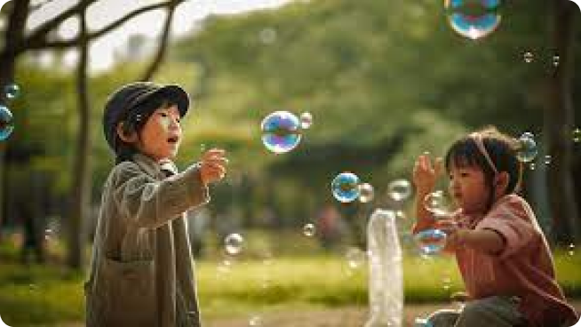

물방울의 찬란한 놀이, 비누방울
2023.10.12

비눗방울이 반짝이며 떠다니는 하늘에는 아이들의
까륵대는 웃음소리도 함께 채워집니다. 뜨거운
햇살도 아랑곳하지 않고 신나게 뛰어놀던 시절에
비눗방울은 그 어떤 놀이보다도 환상적이었습니다.
잡힐 듯 말 듯 떠 다니는 화려한 색의 비눗방울이
주변을 채우면 마치 마법의 세계에 들어간 듯한
기분이 들기도 했습니다. 아이들 뿐만 아니라
어른들도 함께 들어갈 수 있는 마법의 나라,
비눗방울 놀이의 매력적인 세계로 함께 들어가
볼까요?
놀이와 학습이 어우러진 비눗방울 놀이
상상력과 호기심으로 가득 찬 아이들은 매번 새롭고 자유로운 방식을 찾아내 즐기곤 합니다. 비눗방울 놀이는 예쁜 물방울들의 자유로운 움직임에 맞춰 아이들도 움직이며 창의성을 발휘할 수 있는 활동입니다. 이를 통해 놀이와 학습이 어우러진 활동으로 소중한 교육적 가치를 지니고 있습니다.비눗방울 놀이의 교육적 가치는 크게 4가지로 볼 수 있습니다. 창의력과 상상력의 발달, 지각 발달, 과학적 지식 습득, 협력 능력 강화 등이죠. 그 뿐만 아니라 비눗방울 놀이는 놀이 자체가 주는 즐거움이 크기에, 스트레스 해소와 행복감 증진에도 도움이 됩니다. 비눗방울을 불면서 마음의 안정과 행복을 느끼고, 일상 생활에서의 스트레스도 잠시 잊을 수 있는 특별한 시간을 만들어보세요!
놀이와 학습이 어우러진 비눗방울 놀이
비눗방울 놀이 시작!
✅ Step1. 물과 용기 준비작은 용기에 물을 부어주세요. 비눗방울이 잘 만들어지도록 깨끗하고 맑은 물을 사용하는 것이 좋습니다.
✅ Step2. 비눗방울액 섞기 물에 적절한 양의 비눗방울액을 섞어줍니다. 일반적으로 비눗방울액 1컵에 물 1~2컵 정도가 적절합니다. 단, 비눗방울액마다 권장 비율은 조금씩 다를 수 있으니 지침을 따라주세요.
✅ Step3. 비눗방울액에 막대 적시기 구멍이 뚫린 스트로나 동그란 모양의 막대를 용기에 담긴 비눗방울액에 적셔줍니다.
✅ Step4.비눗방울 불어 만들기 스트로를 입으로 가볍게 불거나 막대를 공중에서 휘저어 비눗방울을 만들어냅니다. 비눗방울을 불어 만들기에 성공했다면, 다양한 방법으로 즐길 수 있습니다. 방울을 튕겨보거나 잡아보세요. 크기와 모양도 다양하게 만들어보는 등 자유롭게 즐겨주세요.
이 부분은 주의해주세요!
비눗방울액이 쏟아지지 않도록 용기는 교육자가 들어 주는 것이 좋습니다. 또한 비눗방울액이나 비눗방울을 먹지 않도록 가까이 지켜봐주세요. 뾰족하고 길쭉한 형태가 대부분인 비눗방울 놀이 용 액세서리들이나 도구들을 사용할 때에도 안전에 주의해야 합니다.
맘스케어 에디터
김맘스
현 어쩌구 저쩌구 상담사
전 블라블라 아동치료
#비눗방울
#비눗방울놀이
#교육적가치
#상호작용
#언어활동
#교육활동
#활동내용
#집중력
#인내력
#사회성
#협동심
#창의력
#상상력
#지각발달
#과학지식
#협력능력